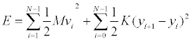

The Oscillator Chain Resonance model displays the total mechanical energy as a function of frequency in a chain of coupled oscillators. The chain is driven at one end by a sinusoidal force Fdrive =sin(ωt) and the total energy is measured after skipping a large number of drive cycles to allow the system to reach steady state. Particles are also subject to a small damping force FStokes= - bv to remove transients and to limit the amplitude of the oscillation.
For a simple one-dimensional Hooke's Law model with spring constant k, the kinetic energy of the i-th particle is Ki= (1/2)Mvi2 and potential energy of each spring is Ui= (1/2) kΔyi2. The total energy E = U + K for a lattice of N molecules is the sum of these energies.

Note that the first particle (i=0) is not used when computing energy because its motion is not governed by Newton's second law.
This simulation was created by Wolfgang Christian using the Easy Java Simulations (Ejs) modeling tool. You can modify this simulation if you have Ejs installed by right-clicking within a plot and selecting "Open Ejs Model" from the pop-up menu. Information about Ejs is available at: <http://www.um.es/fem/Ejs/>.